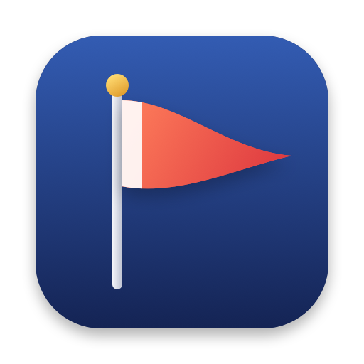

Pennant
Your Slack status, set from your calendar. Write a few rules once, and Pennant keeps your status and Do Not Disturb in step with your day from the menu bar.
How it works
- Rules
Each rule is a regular expression for event titles, like
standup|sync|1:1, plus a status emoji, text, and whether to turn on Do Not Disturb. - Order
Rules are checked top to bottom and the first match wins. Drag them into the order you want.
- Expiry
Your status clears itself when the event ends, even if your Mac is asleep.
- Overlaps
When events overlap, the higher rule wins, then the event that started most recently.
- Calendars
Pick which calendars count. All-day, cancelled, tentative and declined events are skipped.
Polite by default
- Your changes
Set a status by hand and Pennant leaves it alone until the next event it controls.
- Snoozes
If you've already snoozed notifications for longer, Pennant won't shorten it.
- Pause
Stop updates from the menu bar. It stays paused across restarts.
- Sync Now
Reapply the current event's status right away.
Getting started
- 1. Install
Open Pennant.dmg and drag Pennant to Applications.
- 2. Slack app
Create a Slack app from the manifest, install it to your workspace, and copy the
xoxp-user token. - 3. Settings
Allow calendar access, paste the token, and add your rules.
Details
- Native
SwiftUI, sandboxed, and lives only in the menu bar. No Dock icon, no account, no server.
- Private
Your calendar stays on your Mac. The Slack token is kept in your Keychain.
- Updates
Signed, notarised, and kept up to date with Sparkle.